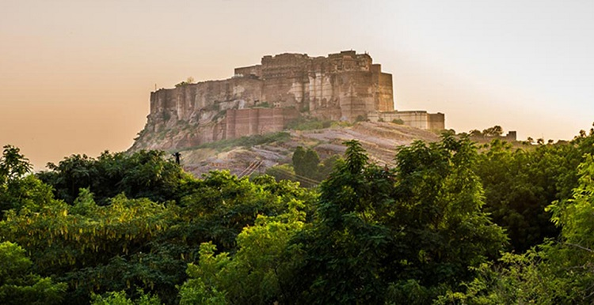
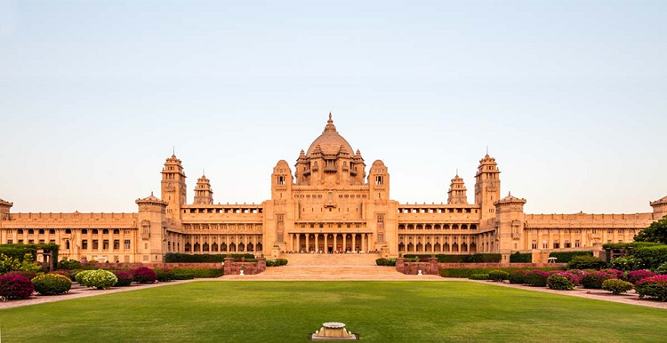
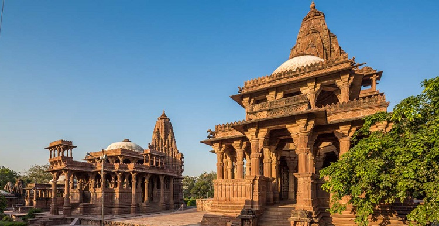
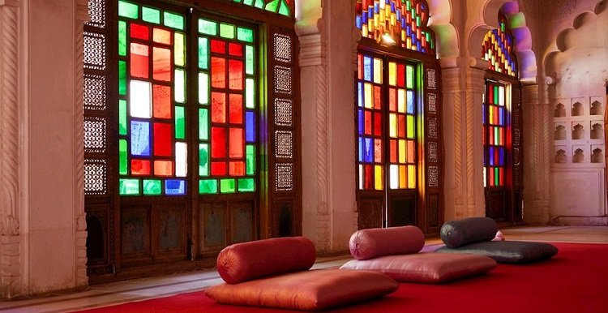

Jodhpur, the second largest city in Rajasthan is popularly known as the Blue City. The name is clearly befitting as most
of the architecture – forts, palaces,
temples, havelis and even houses are built in vivid shades of blue. The strapping forts
that tower this magnificent city sum up to a spectacle you would not want to
miss. The mammoth, imposing fortress of Mehrangarh
has a landscape dominating a rocky ridge with the eight gates leading out of the fortress. The new city is
located outside the
structure. Jodhpur is also known for the rare breed of horses known as Marwari or Malani, which are only found here.
Jodhpur marks its origin back to the year of 1459 AD. The history of this prosperous city revolves around the
Rathore clan.
Rao Jodha, the chief of Rathore Clan is credited with the origin of Jodhpur in India. The city is known to be
built in place of the ancient capital, Mandore of the state
of Manwar. Hence, the people of Jodhpur and surrounding areas
are commonly known as Marwaris. Also, it is believed that the relics of Mandore can still be
witnessed in the Mandore
Gardens.
ATTRACTIONS & PLACES TO VISIT AND EXPLORE IN JODHPUR
|  MEHRANGARH FORT Rising perpendicular and impregnable from a hill which is 125 metres above Jodhpur’s skyline is the |
 UMAID BHAWAN PALACE Umaid Bhawan Palace was built by Maharaja Umaid Singh in 1929 to counter a famine which had hit the |
|  MANDORE Towards the north of Jodhpur is the ancient capital of Marwar, Mandore. This area is of major historical |
 MOTI MAHAL Moti Mahal, as the name suggests, is the Pearl Hall where the royal families held their audience. The |
HOW TO REACH HERE

Jodhpur is connected to Delhi and Mumbai and the airport is about 5 kilometres from the city centre.
Jodhpur is well-connected by road to all major cities and towns.

Jodhpur is well-connected by direct trains from all metros and major cities in India